El registro de jornada viaja por un túnel sellado al sistema de nómina; el expediente del colaborador no queda expuesto.
Las respuestas de Pulso se guardan sin nombre; RH ve resultados agregados por área.
Cada empresa ve solo a sus colaboradores; el corporativo ve el consolidado.
{{ clock }}5G

{{ title }}Karla Medina · CEDIS Tepic
Hola, KarlaAuxiliar de almacén · Embotelladora del Nayar
Aviso de RHDesde el 1 de enero de 2027 el registro de jornada es electrónico y obligatorio. Ya lo puede hacer desde esta app.
Hoy, viernesUbicación verificada · CEDIS Tepic
Entrada7:02
Salida{{ salidaTxt }}
Semana{{ horas }} de 46 h
{{ d.v }}{{ d.d }}
Límite semanal de 2027: 46 horas
{{ limitTitle }}Si necesita quedarse más tiempo, pida horas extra para que su supervisor las apruebe antes.Solicitud enviada a Luis, su supervisor · pendiente{{ extraOkTxt }}
Beneficios en empresas del grupo para usted y su familia.Beneficios y porcentajes ficticios. Se definen con cada empresa en el piloto.